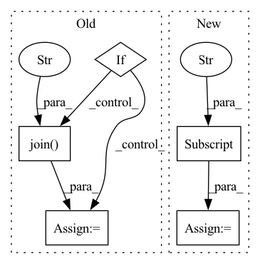

Pattern ID :25966
Before Change
// setup model
loss_record, most_recent_encoder_path = model.learn(dataset_dict, pretrain_epochs, pretrain_batches)
if ppo_finetune and not isinstance(model, algos.RecurrentCPC):
encoder_checkpoint = model.encoder_checkpoints_path
all_checkpoints = glob(os.path.join( encoder_checkpoint, "*" ) )
latest_checkpoint = max(all_checkpoints, key=os.path.getctime)
encoder_feature_extractor_kwargs = {"features_dim": algo_params["representation_dim"],
"encoder_path": os.path.abspath(latest_checkpoint)}After Change
webdataset = load_ilr_dataset(data_path)
color_space = webdataset.meta["color_space"]
observation_space = webdataset.meta["observation_space"]
action_space = webdataset.meta["action_space"]
assert issubclass(algo, RepresentationLearner)
algo_params = dict(algo_params)
algo_params["augmenter_kwargs"] = {In pattern: SUPERPATTERN
Frequency: 5
Non-data size: 5
Instances Fragment ID: 78467516
Project Name: humancompatibleai/eirli
Commit Name: 47ccff934463fdfcd9a8887bff27286744d1fe17
Time: 2020-11-16
Author: sam@qxcv.net
File Name: src/il_representations/scripts/run_rep_learner.py
M Class Name: AnonimousClass
N Class Name: AnonimousClass
M Method Name: run(11)
N Method Name: run(11)
M Parent Class:
N Parent Class:
M File Name: src/il_representations/scripts/run_rep_learner.py
N File Name: src/il_representations/scripts/run_rep_learner.py
M Start Line: 126
M End Line: 161
N Start Line: 123
N End Line: 165
Before Change
for sample_idx in range(len(np.unique(batch.batch))):
elem_tile_id = batch.tile_id[sample_idx]
if self.in_memory_tile_id != elem_tile_id:
if self.in_memory_tile_id:
output_path = osp.join(
self.val_preds_folder,
f"{self.in_memory_tile_id}.las" ,
)
self.val_las.write(output_path)
log.info(f"Saved predictions to {output_path}")
elem_filepath = batch.filepath[sample_idx]After Change
proba = output["proba"]
preds = output["preds"]
batch = output["batch"]
targets = output["targets"]
for sample_idx in range(len(np.unique(batch.batch))):
elem_tile_id = batch.tile_id[sample_idx]
if self.in_memory_tile_id != elem_tile_id:
if self.in_memory_tile_id: Fragment ID: 78467484
Project Name: ignf/lidar-deep-segmentation
Commit Name: 93635d402f34ce5ebc93ae56fab3201b729910c1
Time: 2021-10-05
Author: charles.gaydon@gmail.com
File Name: semantic_val/models/point_net_model.py
M Class Name: PointNetModel
N Class Name: PointNetModel
M Method Name: validation_step_end(2)
N Method Name: validation_step_end(2)
M Parent Class: LightningModule
N Parent Class: LightningModule
M File Name: semantic_val/models/point_net_model.py
N File Name: semantic_val/models/point_net_model.py
M Start Line: 150
M End Line: 160
N Start Line: 175
N End Line: 205
Before Change
else:
address = hostname
if hostname in found: return
if "ec2" in hostname:
s = subprocess.Popen(["ssh",
"-i", os.path.expanduser(os.path.join( fabfile.env.SECRETS_PATH,
"keys/ec2.pem" ) ),
address, "%s %s" % (command, path)], stdout=subprocess.PIPE)
else:
s = subprocess.Popen(["ssh", "-l", NEWSBLUR_USERNAME, After Change
elif isinstance(hostname, tuple):
hostname, address = hostname[0], hostname[1]
else:
address = hosts["_meta"]["hostvars"][hostname]["ansible_host"]
print(" ---> Following %s %s" % (hostname, address))
if hostname in found: return
s = subprocess.Popen(["ssh", "-l", NEWSBLUR_USERNAME,
"-i", os.path.expanduser("/srv/secrets-newsblur/keys/docker.key"), Fragment ID: 78467436
Project Name: samuelclay/NewsBlur
Commit Name: b64f06c269690db9fd71886b3332cd1f3c90ef5d
Time: 2021-03-03
Author: samuel@ofbrooklyn.com
File Name: utils/tlnb.py
M Class Name: AnonimousClass
N Class Name: AnonimousClass
M Method Name: follow_host(6)
N Method Name: follow_host(5)
M Parent Class:
N Parent Class:
M File Name: utils/tlnb.py
N File Name: utils/tlnb.py
M Start Line: 66
M End Line: 84
N Start Line: 68
N End Line: 82
Before Change
// setup model
loss_record, most_recent_encoder_path = model.learn(dataset_dict, pretrain_epochs, pretrain_batches)
if ppo_finetune and not isinstance(model, algos.RecurrentCPC):
encoder_checkpoint = model.encoder_checkpoints_path
all_checkpoints = glob(os.path.join( encoder_checkpoint, "*" ) )
latest_checkpoint = max(all_checkpoints, key=os.path.getctime)
encoder_feature_extractor_kwargs = {"features_dim": algo_params["representation_dim"],
"encoder_path": os.path.abspath(latest_checkpoint)}After Change
webdataset = load_ilr_dataset(data_path)
color_space = webdataset.meta["color_space"]
observation_space = webdataset.meta["observation_space"]
action_space = webdataset.meta["action_space"]
assert issubclass(algo, RepresentationLearner)
algo_params = dict(algo_params)
algo_params["augmenter_kwargs"] = { Fragment ID: 78467451
Project Name: humancompatibleai/eirli
Commit Name: 1086682dee2c96d5c039e3190b1fec8ce4c683bd
Time: 2020-11-16
Author: sam@qxcv.net
File Name: src/il_representations/scripts/run_rep_learner.py
M Class Name: AnonimousClass
N Class Name: AnonimousClass
M Method Name: run(11)
N Method Name: run(11)
M Parent Class:
N Parent Class:
M File Name: src/il_representations/scripts/run_rep_learner.py
N File Name: src/il_representations/scripts/run_rep_learner.py
M Start Line: 126
M End Line: 161
N Start Line: 123
N End Line: 165
Before Change
// App Owner can decide which checkpoint to load (from existing output folder or from base checkpoint)
tasks = []
if model == "deepgrow" or model == "all":
output_dir = os.path.join(self.model_dir, f"deepgrow_{name}")
load_path = os.path.join( output_dir, "model.pt" )
load_path = load_path if os.path.exists(load_path) else os.path.join(self.model_dir, "deepgrow.pt")
logger.info(f"Using existing pre-trained weights: {load_path}")
tasks.append(After Change
output_dir = os.path.join(self.model_dir, f"{model}_{name}")
data = self.data[model]
network = data["network"]
load_path = os.path.join(output_dir, "model.pt")
load_path = load_path if os.path.exists(load_path) else data["path"][0]
logger.info(f"Using existing pre-trained weights: {load_path}")
Fragment ID: 78467492
Project Name: project-monai/monailabel
Commit Name: f23d97efde96d05b3354d40d85b20b1d8a566de8
Time: 2021-05-17
Author: sachidanand.alle@gmail.com
File Name: sample-apps/deepgrow/main.py
M Class Name: MyApp
N Class Name: MyApp
M Method Name: train(2)
N Method Name: train(2)
M Parent Class: MONAILabelApp
N Parent Class: MONAILabelApp
M File Name: sample-apps/deepgrow/main.py
N File Name: sample-apps/deepgrow/main.py
M Start Line: 48
M End Line: 99
N Start Line: 88
N End Line: 168